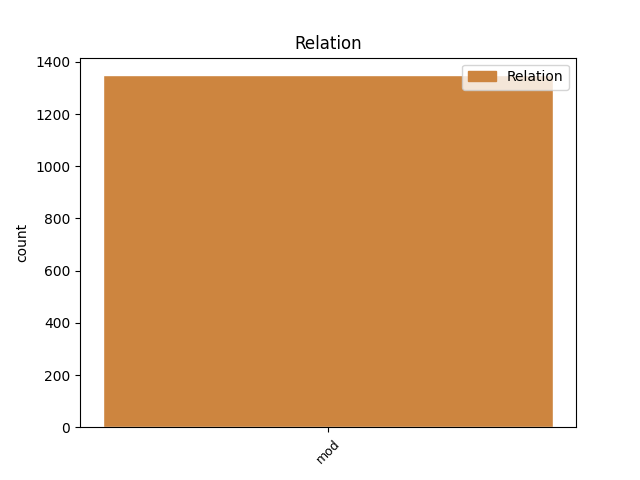
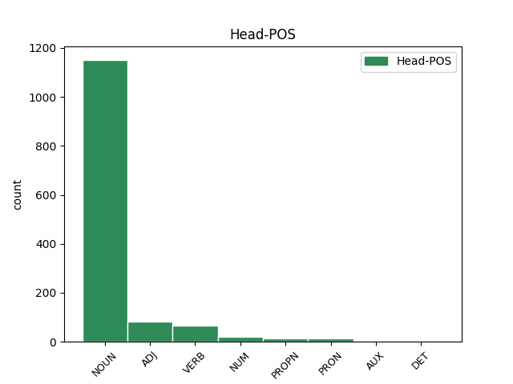
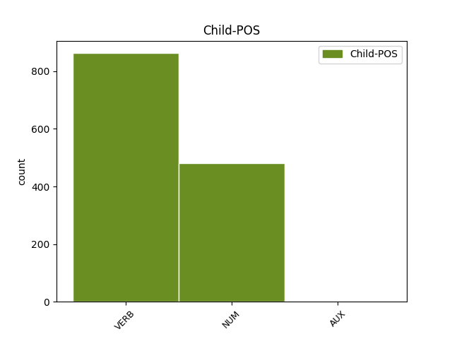

Distribution of features within this leaf



Agreement Rules sorted by frequency.
- When the dependent token is the modifer(mod) of the head token, and the dependent token is VERB.
1 Innumerabiles _ _ _ _ 0 _ _ _
2 aliae _ _ _ _ 0 _ _ _
3 dissimilitudines _ _ _ _ 0 _ _ _
4 sunt _ _ _ _ 0 _ _ _
5 naturae _ _ _ _ 0 _ _ _
6 morum mos NOUN Nb Case=Gen|Gender=Masc|Number=Plur 0 _ _ _
7 que _ _ _ _ 0 _ _ _
8 minime _ _ _ _ 0 _ _ _
9 tamen _ _ _ _ 0 _ _ _
10 vituperandorum vitupero VERB V- Case=Gen|Gender=Masc|Number=Plur|VerbForm=Gdv 6 mod _ ref=1.109
1 Intellegendum _ _ _ _ 0 _ _ _
2 etiam _ _ _ _ 0 _ _ _
3 est _ _ _ _ 0 _ _ _
4 duabus duo NUM Ma Case=Abl|Gender=Fem|Number=Plur 11 mod _ ref=1.107
5 quasi _ _ _ _ 0 _ _ _
6 nos _ _ _ _ 0 _ _ _
7 a _ _ _ _ 0 _ _ _
8 natura _ _ _ _ 0 _ _ _
9 indutos _ _ _ _ 0 _ _ _
10 esse _ _ _ _ 0 _ _ _
11 personis persona NOUN Nb Case=Abl|Gender=Fem|Number=Plur 0 _ _ _
1 si _ _ _ _ 0 _ _ _
2 vero _ _ _ _ 0 _ _ _
3 id _ _ _ _ 0 _ _ _
4 est _ _ _ _ 0 _ _ _
5 quod _ _ _ _ 0 _ _ _
6 nescio _ _ _ _ 0 _ _ _
7 an _ _ _ _ 0 _ _ _
8 sit _ _ _ _ 0 _ _ _
9 ut _ _ _ _ 0 _ _ _
10 non _ _ _ _ 0 _ _ _
11 minus _ _ _ _ 0 _ _ _
12 longas _ _ _ _ 0 _ _ _
13 iam _ _ _ _ 0 _ _ _
14 in _ _ _ _ 0 _ _ _
15 codicillorum _ _ _ _ 0 _ _ _
16 fastis _ _ _ _ 0 _ _ _
17 futurorum sum AUX V- Case=Gen|Gender=Masc,Neut|Number=Plur|Tense=Fut|VerbForm=Part|Voice=Act 18 mod _ ref=4.8A.2
18 consulum consul NOUN Nb Case=Gen|Gender=Masc|Number=Plur 0 _ _ _
19 paginulas _ _ _ _ 0 _ _ _
20 habeat _ _ _ _ 0 _ _ _
21 quam _ _ _ _ 0 _ _ _
22 factorum _ _ _ _ 0 _ _ _
23 quid _ _ _ _ 0 _ _ _
24 illo _ _ _ _ 0 _ _ _
25 miserius _ _ _ _ 0 _ _ _
26 nisi _ _ _ _ 0 _ _ _
27 res _ _ _ _ 0 _ _ _
28 publica _ _ _ _ 0 _ _ _
29 in _ _ _ _ 0 _ _ _
30 qua _ _ _ _ 0 _ _ _
31 ne _ _ _ _ 0 _ _ _
32 speratur _ _ _ _ 0 _ _ _
33 quidem _ _ _ _ 0 _ _ _
34 melius _ _ _ _ 0 _ _ _
35 quicquam _ _ _ _ 0 _ _ _
Disagree Examples:
1 vox vox NOUN Nb Case=Nom|Gender=Fem|Number=Sing 0 _ _ _
2 clamantis clamo VERB V- Case=Gen|Gender=Masc|Number=Sing|Tense=Pres|VerbForm=Part|Voice=Act 1 mod _ ref=MATT_3.3
3 in _ _ _ _ 0 _ _ _
4 deserto _ _ _ _ 0 _ _ _
1 ut _ _ _ _ 0 _ _ _
2 sciatis _ _ _ _ 0 _ _ _
3 autem _ _ _ _ 0 _ _ _
4 quoniam _ _ _ _ 0 _ _ _
5 Filius _ _ _ _ 0 _ _ _
6 hominis _ _ _ _ 0 _ _ _
7 habet _ _ _ _ 0 _ _ _
8 potestatem potestas NOUN Nb Case=Acc|Gender=Fem|Number=Sing 0 _ _ _
9 in _ _ _ _ 0 _ _ _
10 terra _ _ _ _ 0 _ _ _
11 dimittendi dimitto VERB V- Case=Gen|Gender=Neut|Number=Sing|VerbForm=Gdv 8 mod _ ref=MATT_9.6
12 peccata _ _ _ _ 0 _ _ _
1 at _ _ _ _ 0 _ _ _
2 ipse _ _ _ _ 0 _ _ _
3 respondens respondeo VERB V- Case=Nom|Gender=Masc|Number=Sing|Tense=Pres|VerbForm=Part|Voice=Act 0 _ _ _
4 dicenti dico VERB V- Case=Dat|Gender=Masc|Number=Sing|Tense=Pres|VerbForm=Part|Voice=Act 3 mod _ ref=MATT_12.48
5 sibi _ _ _ _ 0 _ _ _
6 ait _ _ _ _ 0 _ _ _
1 vos _ _ _ _ 0 _ _ _
2 ergo _ _ _ _ 0 _ _ _
3 audite _ _ _ _ 0 _ _ _
4 parabolam parabola NOUN Nb Case=Acc|Gender=Fem|Number=Sing 0 _ _ _
5 seminantis semino VERB V- Case=Gen|Gender=Masc|Number=Sing|Tense=Pres|VerbForm=Part|Voice=Act 4 mod _ ref=MATT_13.18
1 manducantium manduco VERB V- Case=Gen|Gender=Masc|Number=Plur|Tense=Pres|VerbForm=Part|Voice=Act 4 mod _ ref=MATT_14.21
2 autem _ _ _ _ 0 _ _ _
3 fuit _ _ _ _ 0 _ _ _
4 numerus numerus NOUN Nb Case=Nom|Gender=Masc|Number=Sing 0 _ _ _
5 quinque _ _ _ _ 0 _ _ _
6 milia _ _ _ _ 0 _ _ _
7 virorum _ _ _ _ 0 _ _ _
8 exceptis _ _ _ _ 0 _ _ _
9 mulieribus _ _ _ _ 0 _ _ _
10 et _ _ _ _ 0 _ _ _
11 parvulis _ _ _ _ 0 _ _ _